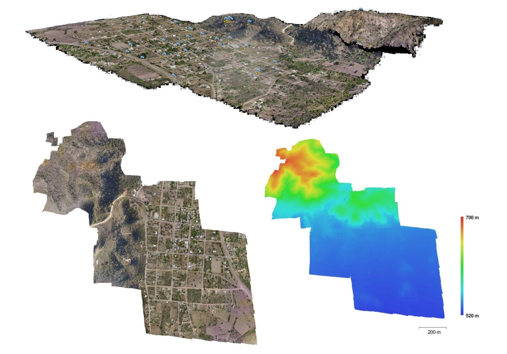
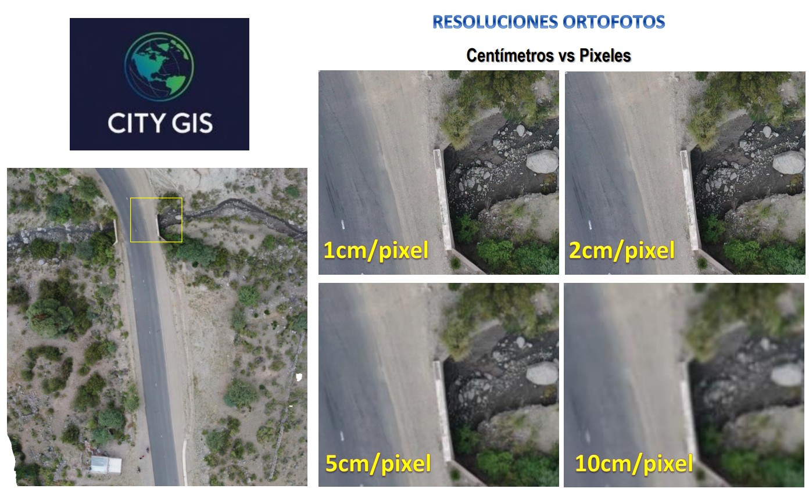
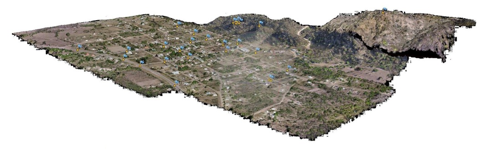

Villa La Punta
Desafío técnico en zona de serranías: Generación de cartografía de precisión y modelos de elevación para planificación de infraestructura.

Precisión Centimétrica
Utilizamos tecnología de fotogrametría aérea para obtener ortofotos con diferentes niveles de detalle, permitiendo una visualización nítida del terreno para estudios hídricos y viales.
Resolución Máxima
1cm / píxelUrbano Estándar
2cm - 5cm / píxelPlanificación Rural
10cm / píxel
Modelado de Terreno Complejo
Villa La Punta presenta variaciones de altura significativas (520m a 700m), lo que requiere un procesamiento de datos exhaustivo.
Modelo Digital (MDT)
Representación 3D exacta de la superficie, filtrando vegetación para análisis de suelo puro.
Curvas de Nivel
Generación de líneas de altitud precisas para el diseño técnico de desagües y cloacas.
Planimetría Digital
Vectorización de la huella urbana sobre la cartografía base de alta resolución.
